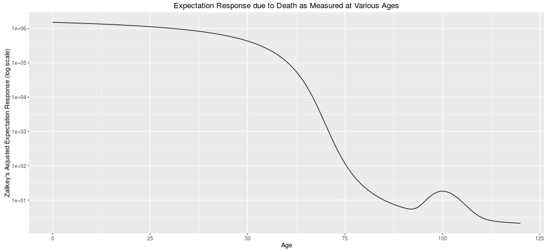
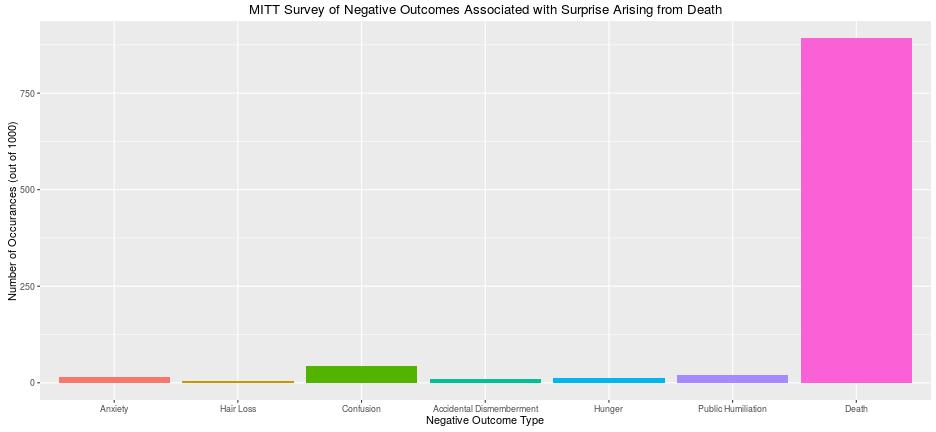
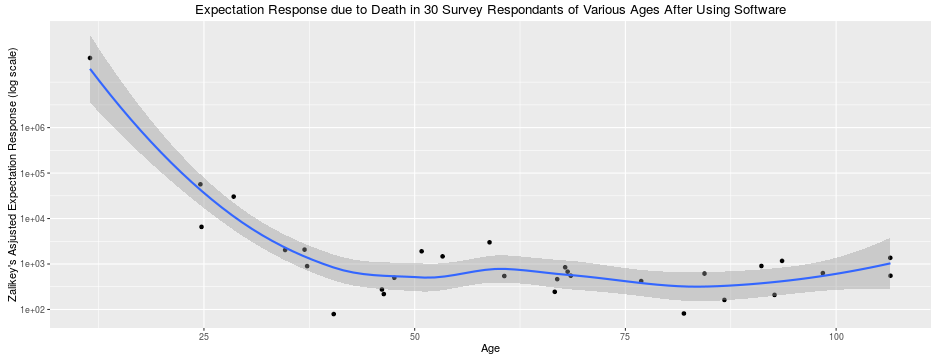

Death Prediction Evaluation Service
or Helping People Cope with the Inevitable
Wayne Witzke
The Problem

- People under the age of 50 are nearly 1 million times more surprised by their
own demise (than people over the age of 110)!
Bad for Society

- Clearly, reducing surprise of death is important for the health and well-being of society!
Our Proposal:
The Death Prediction Evaluation Service
- Software that evaluates personal estimates for remaining years before death
- Provides feedback regarding the quality of those estimates, and helpful tips
if those estimates were somewhat off
- Collects and displays data regarding the estimates made by others
- Provides comfort by showing people they are not alone!
- Gives people a quantitative measure for how much they need to manage their
expectations!
- After deployment, we predict an eventual 95% reduction in the adjusted
expectation response in people under 50 years of age
- Young people will then be more like people over the age of 110!
- https://wwitzke.shinyapps.io/dpredevalserv/
Preliminary Study Results

- Clearly significant reduction in response in respondants under 50 years of age!
- Note impressively small confidence interval of fit line!
- Please give us money!